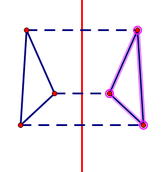

几何画板基础入门教程
作者：TeliuTe 来源：基础教程网
四、显示和隐藏 返回目录 下一课作图往往需要实线和虚线，用不同颜色区分，还可以设置线的粗细；
1、实线和虚线
1）用线段工具画一个三角形，再在旁边用直线工具，按住Shift键画一条竖直直线；
2）用选择工具，在直线上双击，标记为镜面，再画框选中整个三角形；
3）点菜单“变换 - 反射”，得到一个以直线为对称轴的对称三角形；
4）调整其中一个图形，另外一个也会跟着变动；
5）在空白处点一下取消选择，然后选中上面两个对应点，一左一右；
6）点菜单“构造 - 线段”，从而连接两个对应点；
7）保持线段选中状态，点菜单“显示 - 线型 - 虚线”，将线段设为虚线状态；
8）同样将三角形另外两个对应点连接，也都在“显示”菜单里，设为虚线；
2、设置颜色
1）在空白处点击，取消选择，然后选中中间的直线；
2）点菜单“显示 - 颜色 - 红色”，将直线设为红色；
3）点空白处取消选择，再选中右边的三角形，依次点击点和线段；

4）同样点菜单“显示 - 颜色 - 绿色”，将三角形设为绿色，包括三个点和三个边；
5）同样，将三条连接对应点的辅助线，设为天蓝色；
本节学习了线型和颜色的基础知识，如果你成功地完成了练习，请继续学习下一课内容；
本教程由TeliuTe制作|著作权所有
基础教程网：http://teliute.org/
美丽的校园……
转载和引用本站内容，请保留作者和本站链接。